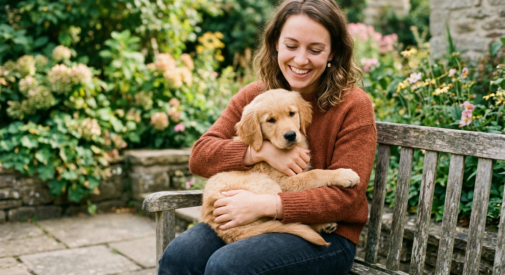
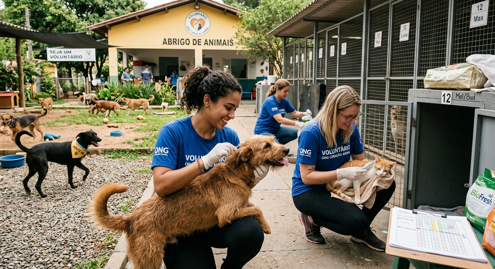
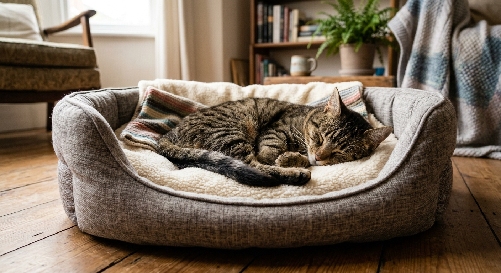
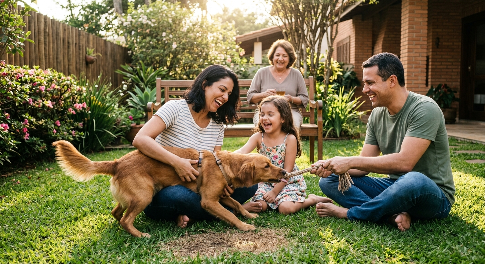

O começo
O Patinhas de Amor nasceu em 2018, em uma pequena garagem de bairro, a partir de um gesto simples. Uma moradora encontrou uma cadela com cinco filhotes abandonados dentro de uma caixa na calçada e, sem saber a quem recorrer, decidiu levá-los para casa e cuidar deles por conta própria. Nos primeiros dias, ela mesma comprava a ração, limpava o espaço e acordava de madrugada para dar mamadeira aos menores. Em poucas semanas, vizinhos começaram a aparecer com cobertores, potes de água e vontade de ajudar, e as conversas na calçada logo viraram um grupo de mensagens. Foi assim que um resgate pontual se transformou em um pequeno grupo de voluntários, unido por um mesmo objetivo: não deixar nenhum animal da região sem cuidado.


O crescimento
Com o passar dos meses, a notícia se espalhou, e os pedidos de ajuda passaram a chegar de todos os cantos do bairro e das cidades vizinhas: animais encontrados em ruas movimentadas, filhotes largados em terrenos baldios, cães machucados e gatos que perderam a família com uma mudança de endereço. A garagem logo ficou pequena demais para tantos hóspedes, e o grupo organizou rifas, bazares e feiras de adoção para arrecadar dinheiro. Em 2019, o projeto conseguiu alugar um espaço maior, com baias, área de passeio e uma sala para atendimentos. Foi nessa época que ele ganhou oficialmente o nome Patinhas de Amor, escolhido pelos voluntários em uma votação, porque resumia o que todos sentiam ao ver um animal encontrar um lar.
A organização
Em 2021, o grupo criou o programa de lares temporários, em que famílias recebem os animais por algumas semanas para ajudá-los a se recuperar, a perder o medo e a aprender a viver dentro de casa. Esse programa abriu mais vagas no abrigo e fez com que os animais chegassem à adoção mais seguros e sociáveis. Em 2023, vieram as parcerias com clínicas veterinárias da região, que passaram a oferecer consultas, vacinação e castração com valores reduzidos. Hoje, cada animal que chega é examinado, vacinado, vermifugado e, quando possível, castrado, e passa por um período de convivência para que a equipe conheça a sua personalidade. Em 2025, a equipe de voluntários foi ampliada com novas funções, como atendimento a interessados, divulgação nas redes sociais e acompanhamento das adoções nas primeiras semanas.


O presente e o futuro
Para o Patinhas de Amor, adotar é o começo de uma relação, e não o fim do trabalho. Por isso, toda adoção começa com uma conversa sincera sobre a rotina e as possibilidades de cuidado, passa por um termo de adoção responsável e é acompanhada de perto, para tirar dúvidas e ajudar na adaptação. O objetivo é que cada animal vá para uma família que combine com ele e nunca mais precise voltar para a rua. O sonho do grupo é ampliar o espaço, criar um programa de castração gratuita para famílias com poucos recursos e levar palestras sobre posse responsável às escolas da região. Enquanto isso, o trabalho continua, um animal de cada vez, graças a quem adota, doa, divulga e dedica um pouco do seu tempo.